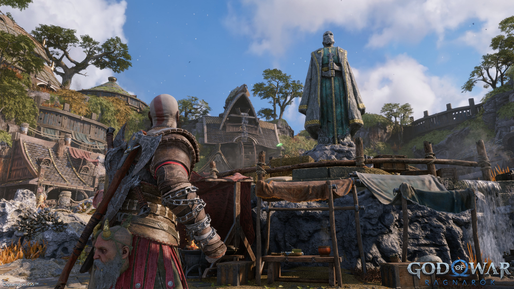
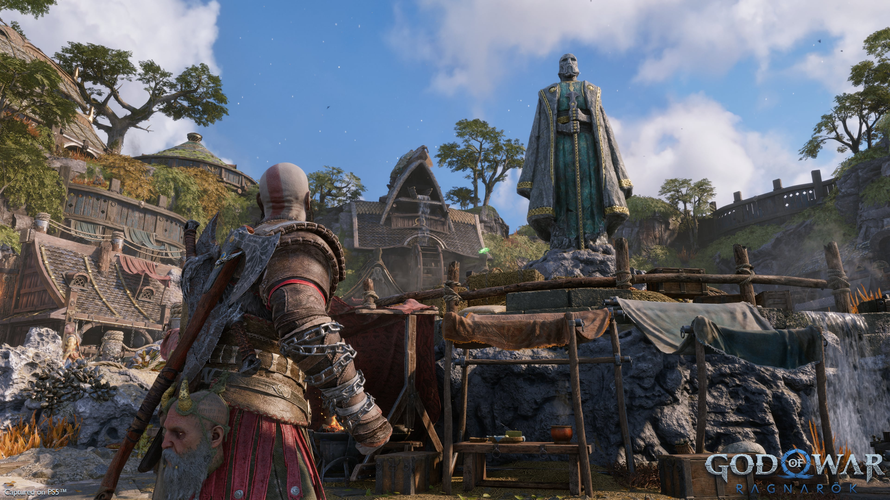

God of War Ragnarök
A God of War Ragnarök egy akció-kaland videojáték, amelyet a Santa Monica Studio fejlesztett és a Sony Interactive Entertainment adott ki . 2022. november 9-én jelent meg világszerte PlayStation 4 -re és PlayStation 5 -re , ami a God of War sorozat első generációi közötti megjelenését jelenti . Időrendben ez a sorozat kilencedik része, és a 2018-as God of War feltételezett folytatása . A lazán a skandináv mitológián alapuló játék az ókori Skandináviában játszódik , és a sorozat főszereplője, Kratos .és tizenéves fia, Atreus. A sorozat skandináv korszakának fináléjaként ugratott játék a Ragnarök című eszkatologikus eseményt takarja, amely központi szerepet játszik a skandináv mitológiában, és az előző játékban megjövendölték, hogy megtörténik, miután Kratos megölte Baldur Æsir istent .
Az eredetileg 2021-es megjelenésre tervezett játék részben a COVID-19 világjárvány fejlesztésre gyakorolt hatása és a Kratos színész, Christopher Judge egészségügyi problémái miatt 2019 augusztusában késett. A késés előtt a Legkeresettebb kategóriában díjat nyert. Játék és Legvártabb játék a 2020-as Golden Joystick Awards és PlayStation.Blog díjakból, és sok szerencsejáték-újságíró és webhely tartotta a folytatást az egyik legjobban várt játéknak. A Ragnarök a kritikusok egyetemes elismerését vívta ki.

 
